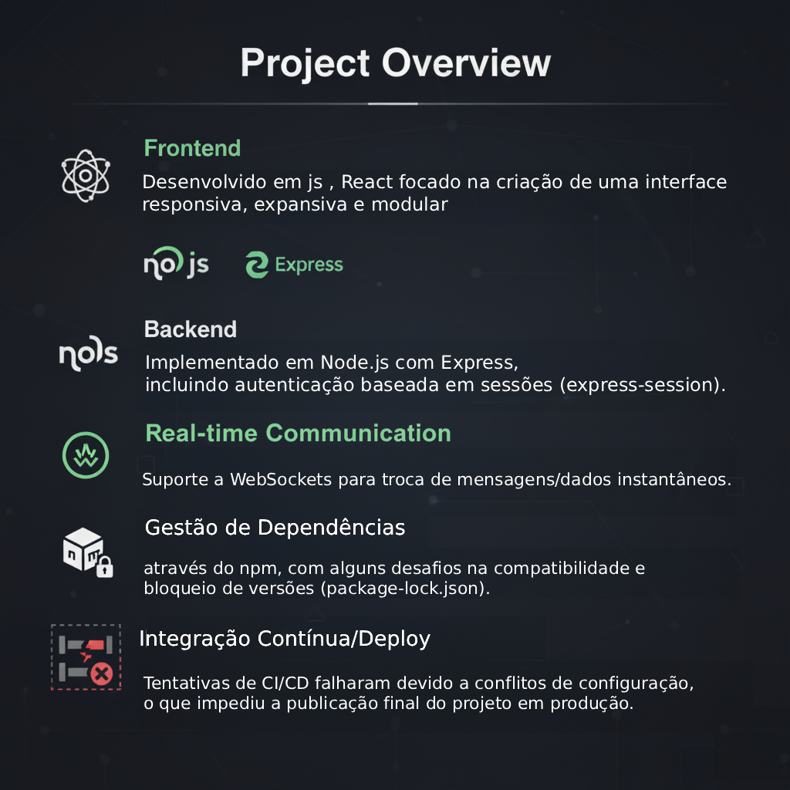

Spoto Mobile app para alugar espaços.
Motivação do Projeto
Este projeto foi desenvolvido no âmbito do projeto final do curso de Programação Web.
O objetivo principal não foi apenas entregar uma aplicação funcional, mas sim explorar o processo completo
de desenvolvimento de uma aplicação web moderna.
Optei por experimentar diferentes abordagens e tecnologias — como React e WebSockets —
de forma a consolidar conhecimentos e compreender melhor os desafios de integração,
mesmo que isso resultasse numa stack menos uniforme.
Apesar das dificuldades no deploy, nomeadamente relacionadas com o package-lock.json,
configuração de CI/CD e a biblioteca express-session,
considero que este projeto foi fundamental para adquirir experiência prática e perceber como diferentes peças
do ecossistema JavaScript podem trabalhar em conjunto.
Descrição Técnica
